Code
# load libraries
library(tidyverse)
library(kableExtra)
library(ggplot2)
library(ggbeeswarm)
library(gridExtra)# load libraries
library(tidyverse)
library(kableExtra)
library(ggplot2)
library(ggbeeswarm)
library(gridExtra)Numerical data, both discrete and continuous, can be visualized and summarized in many ways. Common plots include histograms, density plots, box plots and scatter plots. Summary statistics include mean, median, quantiles, variance, standard deviation and median absolute deviation.
flowchart TD A(Numerical data) --> B(Numerical summary) A(Numerical data) --> C(Graphical summary) B(Numerical summary) --> D(Mean
Median
Quantiles
Variance
Standard deviation
Mean absolute deviation
...) C(Graphical summary) --> E(Histogram
Density plot
Box plot
...)
Example 3.1 (Throwing 10 dice) Let’s imagine that we have 10 dice and we throw them all at once. We count and record the total number of dots and repeat the whole process 100 times.
The counts for the first few runs are:
# simulate throwing 10 dice, counting dots and repeating the experiment 100 times
set.seed(123)
sample.sum10dice <- replicate(100, sum(sample(1:6, 10, replace = TRUE)))
data.sum10dice <- data.frame(run = 1:length(sample.sum10dice), sumcounts = sample.sum10dice)
head(data.sum10dice) run sumcounts
1 1 40
2 2 29
3 3 33
4 4 27
5 5 40
6 6 27When the data set is not very big, i.e. does not contain millions of measurements for a given numerical variable of interest, it can be useful to plot all measurements. This can be done in a 1D scatter plot, called a strip plot or a dot plot.
# define generic ggplot theme
font.size <- 12
col.blue.light <- "#a6cee3"
col.blue.dark <- "#1f78b4"
my.ggtheme <- theme(axis.title = element_text(size = font.size),
axis.text = element_text(size = font.size),
legend.text = element_text(size = font.size),
legend.title = element_blank(),
legend.position = "top")
# plot strip plot
data.sum10dice %>%
ggplot(aes(x = "", y = sumcounts)) +
geom_point() +
theme_bw() +
ylab("dot counts (10 dice)") +
xlab("") +
my.ggtheme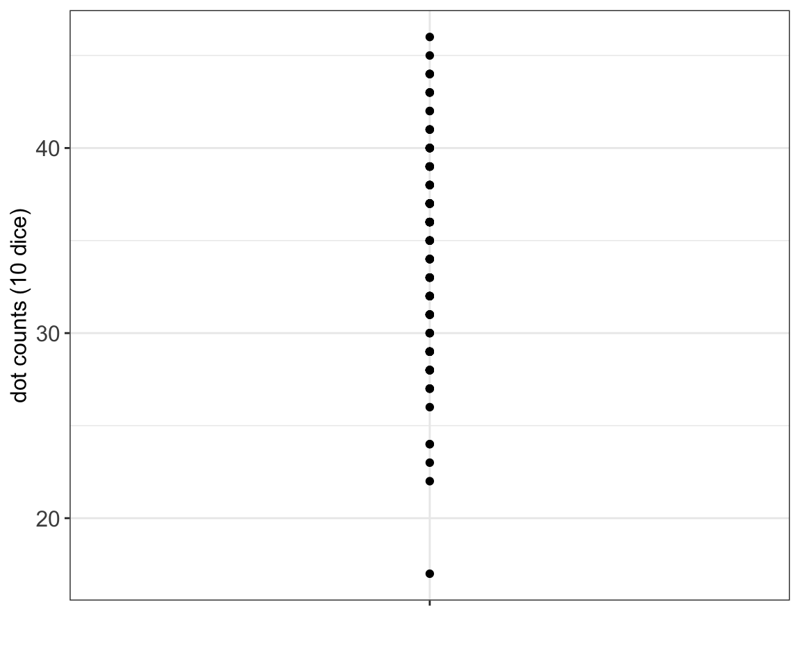
As some measurements are repeated, e.g. we count 40 dots in our first attempt in our 40 attempt, the measurements on the strip plot are shown on top of each other and we cannot see them all. A jittered strip plot attempts to reduce overlays by randomly moving data points by small amounts to the left and right.
# plot jittered strip plot
data.sum10dice %>%
ggplot(aes(x = "", y = sumcounts)) +
geom_jitter(height = 0, width = 0.35) +
theme_bw() +
ylab("dot counts (10 dice)") +
xlab("") +
my.ggtheme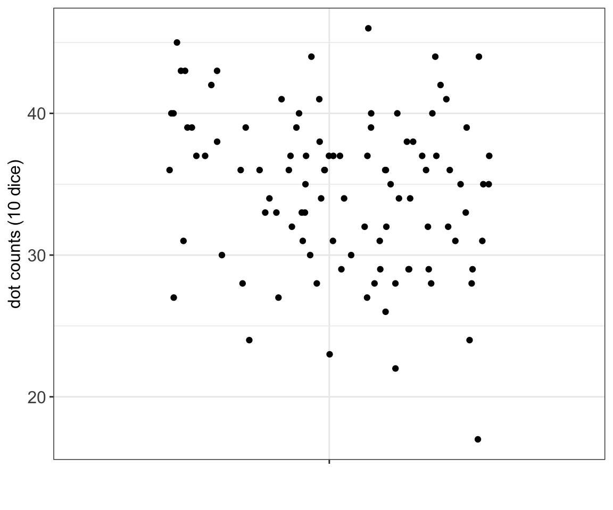
In a jittered strip plot some overlays may still occur, as the data points are moved at random. Further, many data points are moved unnecessarily. In a beeswarm plot data points are moved only when necessary, and even then the data point is only moved the minimum distance necessary to avoid overlays
# plot beeswarm
data.sum10dice %>%
ggplot(aes(x = "", y = sumcounts)) +
geom_beeswarm(cex = 2) +
theme_bw() +
ylab("dot counts (10 dice)") +
xlab("") +
my.ggtheme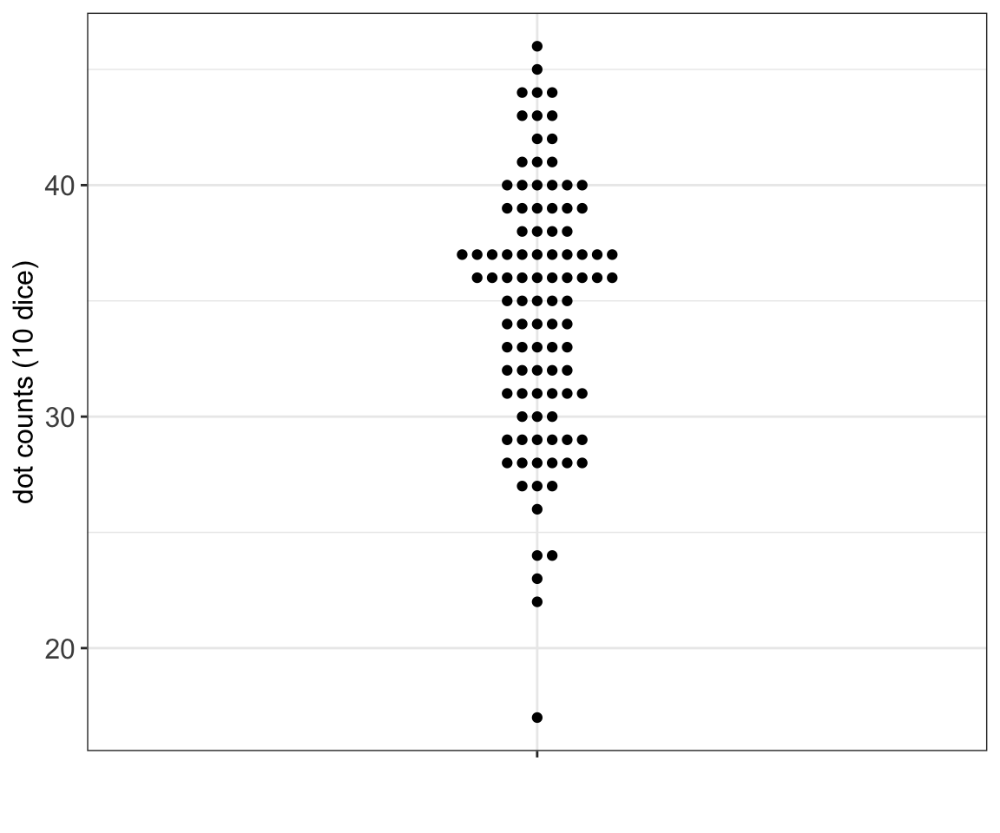
Histogram & density plot
A histogram bins the data and counts the number of observations that fall into each bin.
# plot histogram
data.sum10dice %>%
ggplot(aes(x = sumcounts)) +
geom_histogram(binwidth = 5, center = 32.5, color = "white", fill = col.blue.dark) +
theme_bw() +
xlab("dot counts (10 dice)") +
my.ggtheme
# alternatively un-comment to plot histogram with hist(), base R plot
# hist(data.sum10dice$counts, main = "", xlab="counts")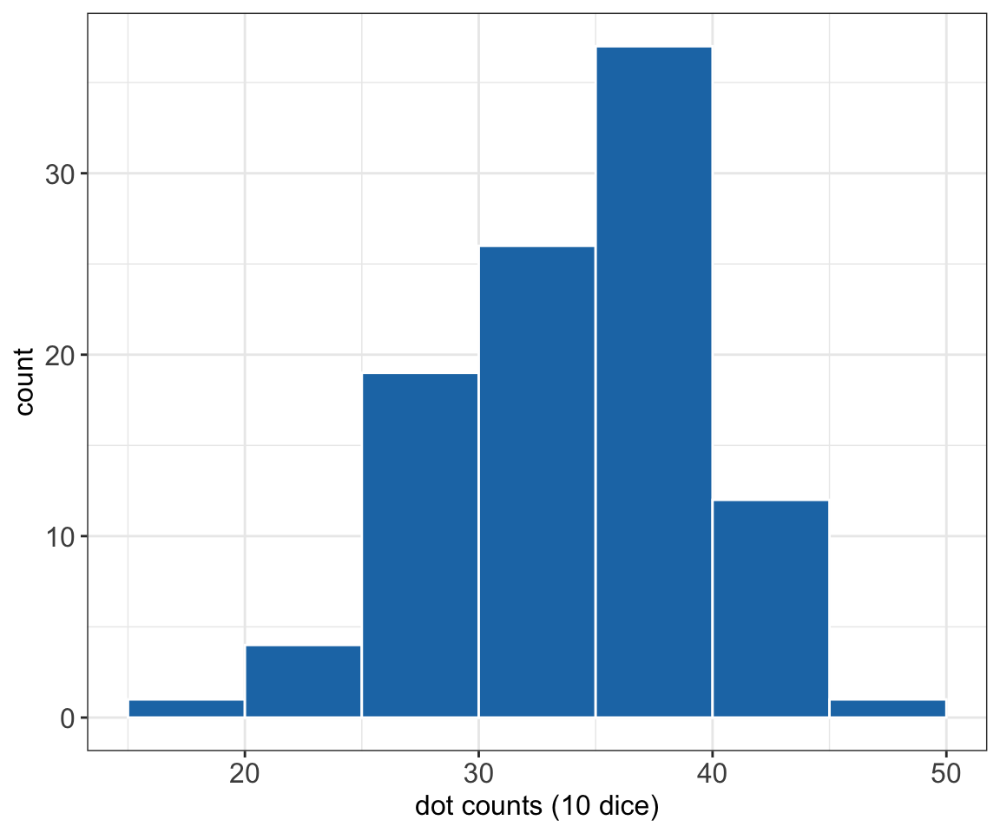
A density plot is like a smoothed histogram where the total area under the curve is set to 1. A density plot is an approximation of a distribution.
# plot density plot
data.sum10dice %>% ggplot(aes(x = sumcounts)) +
geom_density() +
theme_bw() +
xlab("dot counts (10 dice)") +
my.ggtheme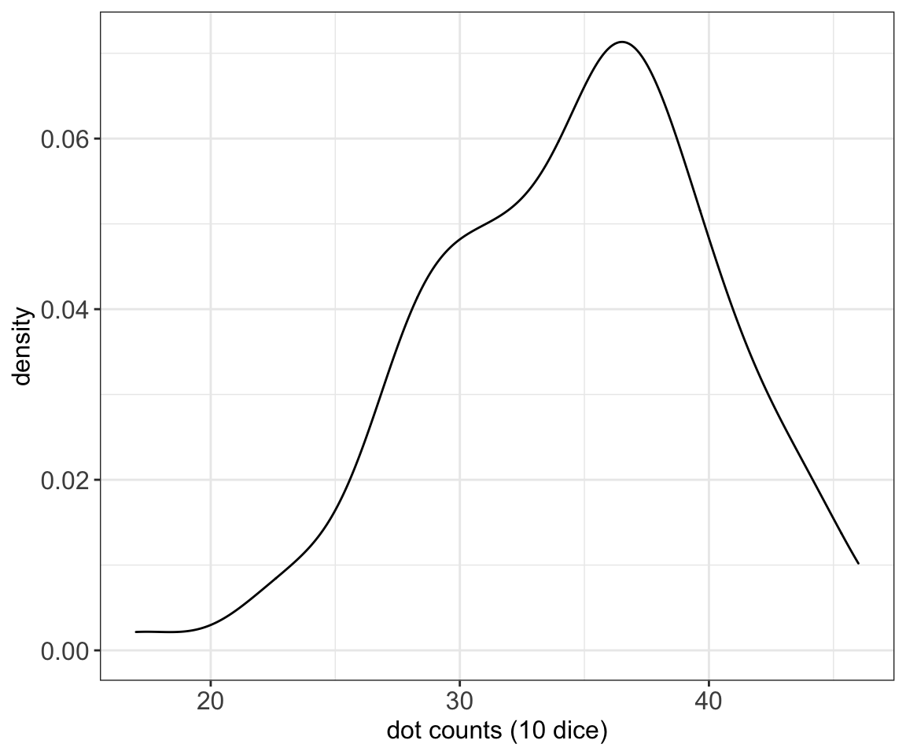
A box plot, also called a box-and-whisker plot, shows a box covering 50% of the data and the center line is located at the median. The median value is a value such that 50% of the measurements are below the median.
The whiskers extend to the most extreme data point or at most 1.5 times the length of the box. (Note that 1.5 is the default in both ggplot and basic R graphics, but it is also a number that can be changed.) Any measurements further out are shown as outliers. A box plot is based on both measures of location and of spread (more about these in the following chapters).
data.sum10dice %>% ggplot(aes(y = sumcounts, x="")) +
geom_boxplot(alpha = 1) +
geom_jitter(width = 0.35, alpha = 0.2) +
theme_bw() +
ylab("dot counts (10 dice)") +
xlab("") +
my.ggtheme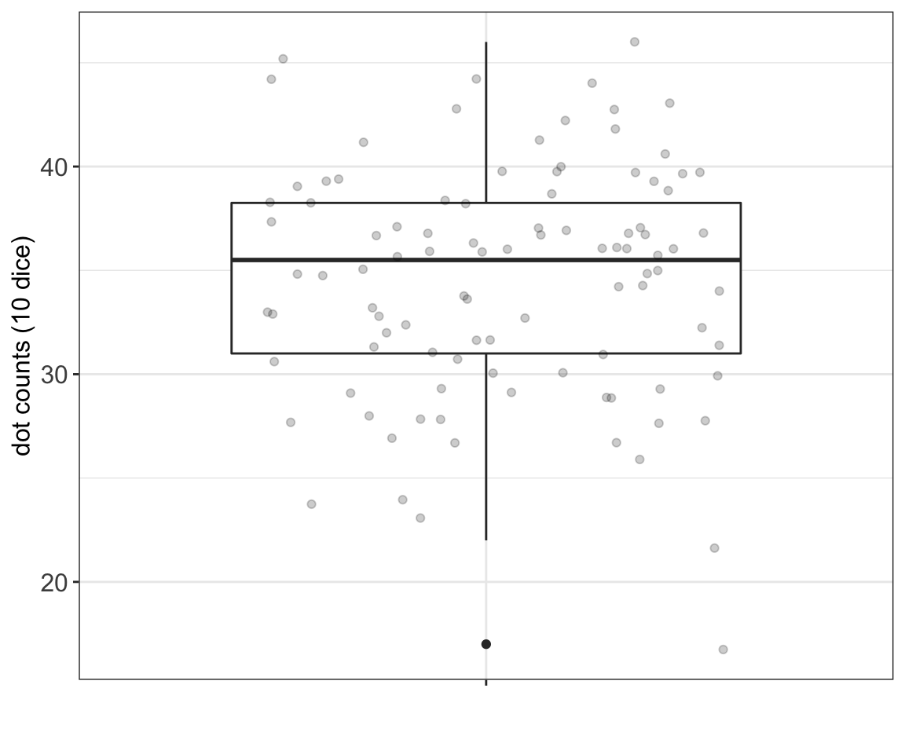
Example 3.2 (Lab mice (cont.))
Let’s go back to our lab mice example and focus on the weight measurements that we have observed for our male and female mice over a period of time. How can we summarize the data in a graphical way?
# read in mice data
data.mice <- read_csv("data/mice.csv")
data.mice <- data.mice %>%
mutate(weight = round(weight,2))
# select weights at week 5
data.mice.week5 <- data.mice %>%
filter(week == 5)
# strip plot stratified by sex
p.striplot <- data.mice.week5 %>%
ggplot(aes(x = sex, y = weight)) +
geom_point() +
theme_bw() +
xlab("") +
ylab("weigth (g)") +
my.ggtheme
# jittered strip plot stratified by sex
p.jitter <- data.mice.week5 %>%
ggplot(aes(x = sex, y = weight)) +
geom_jitter(height = 0, width = 0.2) +
theme_bw() +
xlab("") +
ylab("weigth (g)") +
my.ggtheme
# beeswarm stratified by sex
p.beeswarm <- data.mice.week5 %>%
ggplot(aes(x = sex, y = weight)) +
geom_beeswarm(cex = 3) +
theme_bw() +
xlab("") +
ylab("weigth (g)") +
my.ggtheme
grid.arrange(arrangeGrob(p.striplot, p.jitter, p.beeswarm,ncol=3))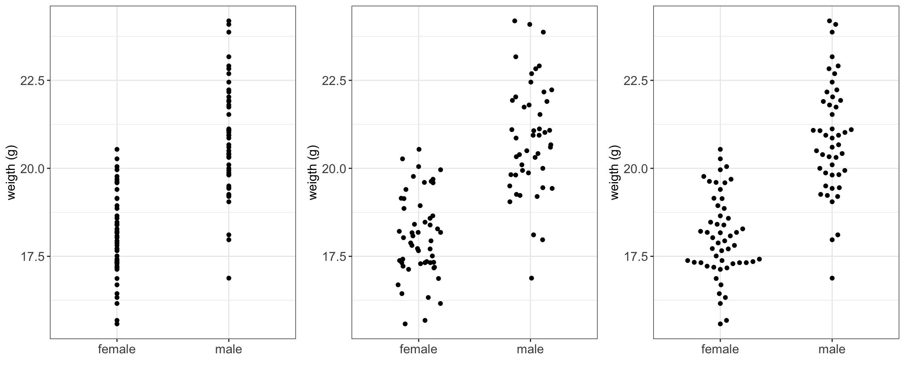
# plot histogram
p.hist <- data.mice.week5 %>%
ggplot(aes(x=weight, fill=sex)) +
geom_histogram(bins=15, color="white", alpha = 0.6) +
xlab("weight (g)") +
theme_bw() +
scale_fill_brewer(palette = "Dark2") +
my.ggtheme
p.density <- data.mice.week5 %>%
ggplot(aes(x=weight, fill=sex)) +
geom_density(alpha = 0.6) +
xlab("weight (g)") +
theme_bw() +
scale_fill_brewer(palette = "Dark2") +
my.ggtheme
grid.arrange(arrangeGrob(p.hist, p.density, ncol=2))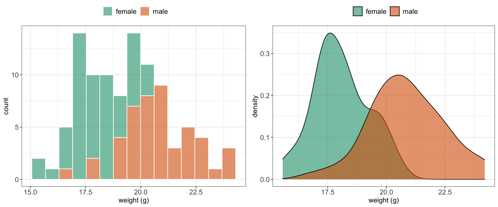
# plot box plot
data.mice.week5 %>%
ggplot(aes(y=weight, fill=sex)) +
geom_boxplot(alpha = 0.6) +
xlab("weight (g)") +
theme_bw() +
scale_fill_brewer(palette = "Dark2") +
my.ggtheme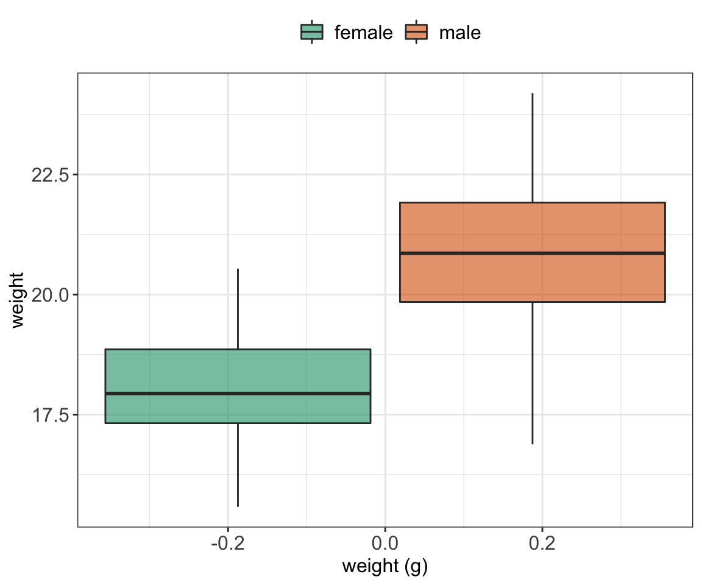
Scatter plots are useful when studying a relationship (association) between two numerical variables. Let’s add some data on our mice length and have a look at the relationship between mice weight and length at week 10.
# simulate mice length data (based on normal distribution)
data.mice.week10 <- data.mice %>%
filter(week == 10) %>%
mutate(length = 7.3+weight/20+rnorm(100,0,0.1))
# plot scatter plot
data.mice.week10 %>%
ggplot(aes(x = weight, y = length)) +
geom_point() +
xlab("weigth (g)") +
ylab("length (cm)") +
theme_bw() +
my.ggtheme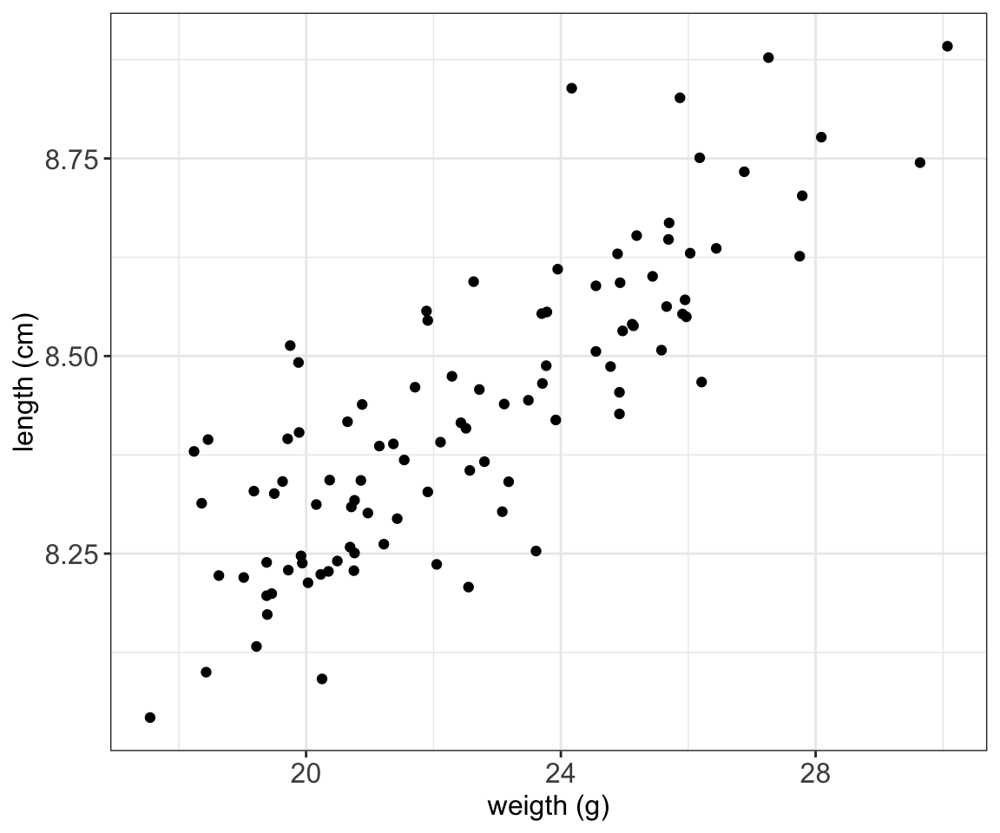
# plot scatter plot
data.mice.week10 %>%
ggplot(aes(x = weight, y = length, color = sex)) +
geom_point() +
xlab("weigth (g)") +
ylab("length (cm)") +
theme_bw() +
scale_color_brewer(palette = "Dark2") +
my.ggtheme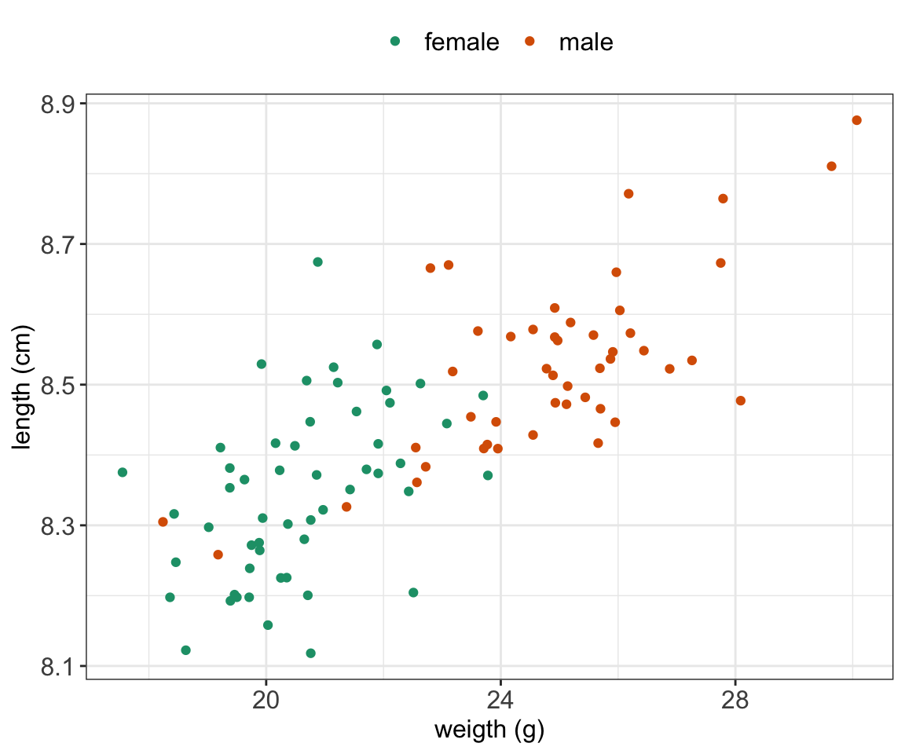
Sometimes, it is useful to connect the observations in the order in which they appear, e.g. when analyzing time series data.
# select four mice, with ids 17, 18 and 19
data.mice.4 <- data.mice %>%
subset(id %in% 16:19)
# plot a line plot
data.mice.4 %>%
ggplot(aes(x=week, y=weight, group=id)) +
geom_point() +
geom_line() +
ylab("weigth (g)") +
theme_bw() +
my.ggtheme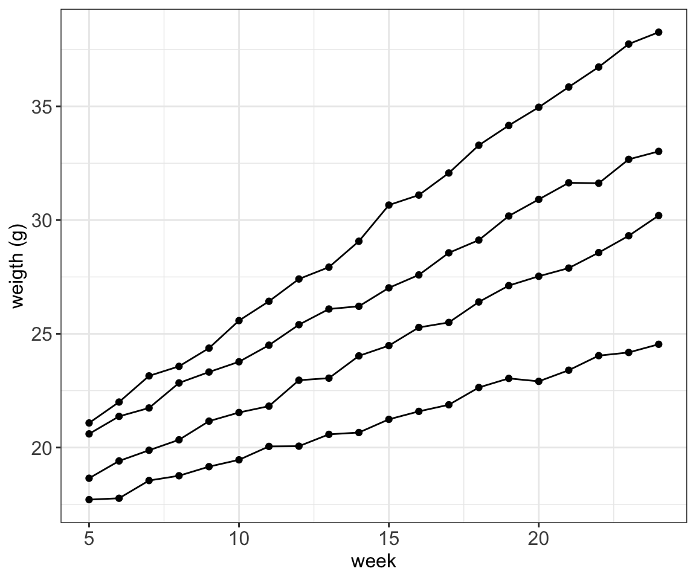
# plot a line plot
data.mice.4 %>%
ggplot(aes(x=week, y=weight, group=id, color = sex)) +
geom_point() +
geom_line() +
ylab("weigth (g)") +
theme_bw() +
scale_color_brewer(palette = "Dark2") +
my.ggtheme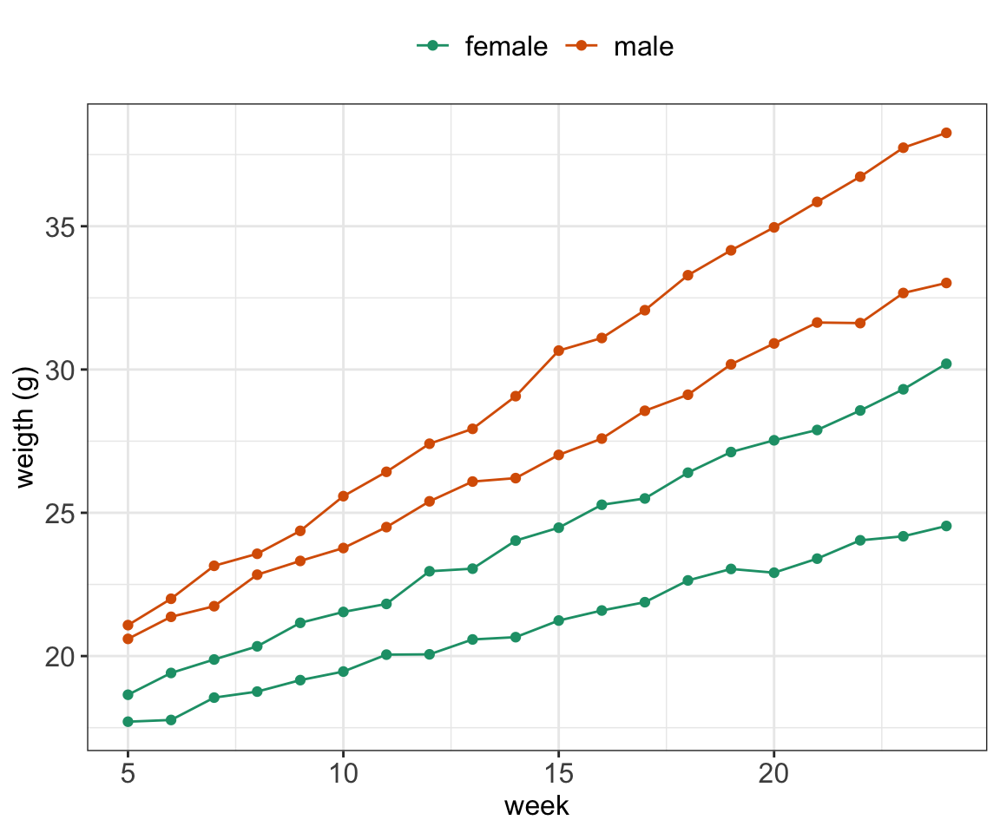